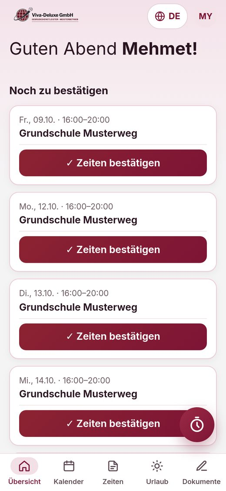
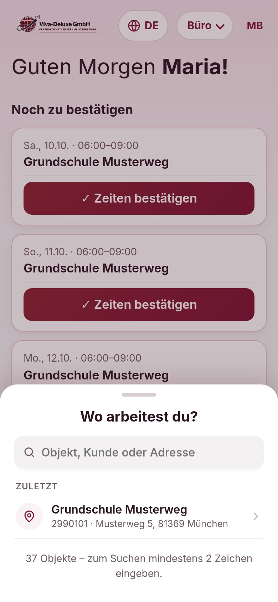
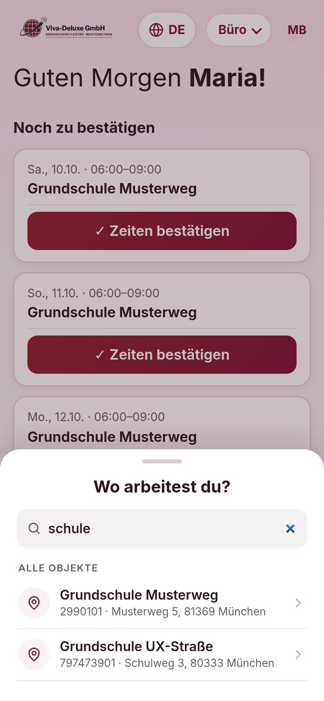
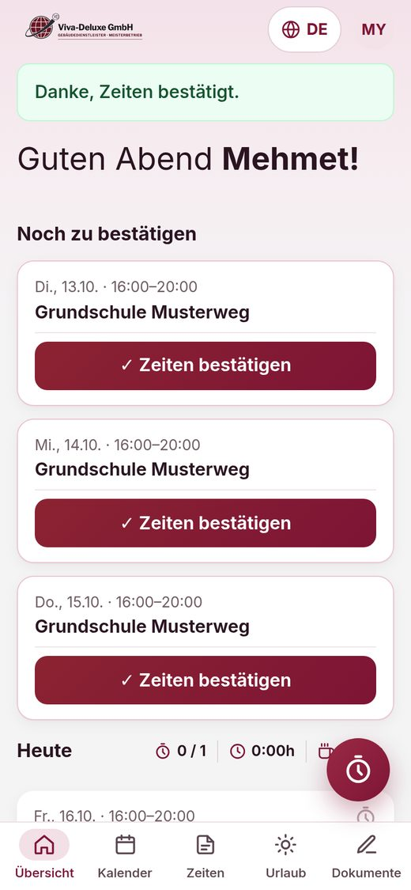
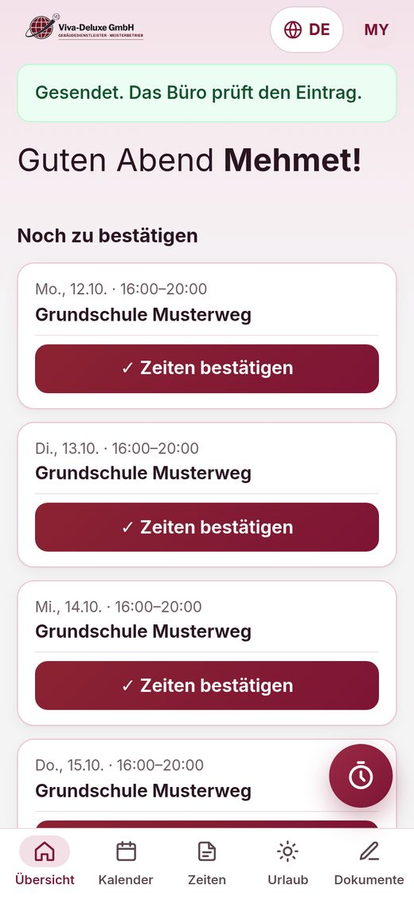
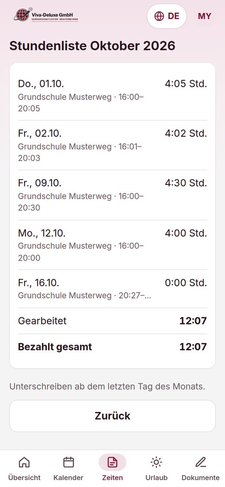
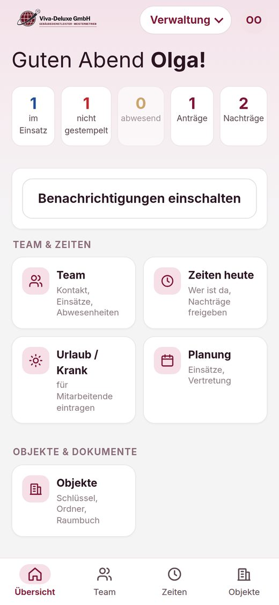
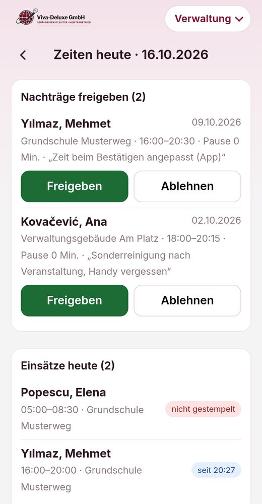

Zeit stempeln und bestätigen
Viva-Deluxe App · für Objektleitungen (eigene Zeit und Team) · Stand 17.10.2026
Kurz gesagt: Jeder Einsatz braucht eine erfasste Zeit. Entweder mit der Stoppuhr stempeln (Start beim Ankommen, Stopp beim Gehen) oder nach dem Einsatz „Zeiten bestätigen“. Weicht die Zeit vom Plan ab: „Zeit bearbeiten“ – die Objektleitung gibt sie frei.
① Stoppuhr
Start beim Ankommen, Stopp beim Gehen. Genaueste Zeit.
② Bestätigen
Nach dem Einsatz: „Ja, stimmt“ – wenn genau nach Plan gearbeitet wurde.
③ Bearbeiten
Anders gearbeitet? Zeit ändern und senden – Freigabe durch die Objektleitung.
1. Die Startseite

- Oben stehen unter „Noch zu bestätigen“ vergangene Einsätze der letzten 7 Tage, für die noch keine Zeit erfasst ist.
- Darunter „Heute“ mit den heutigen Einsätzen (Objekt, Adresse, Uhrzeit).
- Unten rechts der runde Knopf mit der Uhr = Stoppuhr.
- Unten die Leiste: Übersicht · Kalender · Zeiten · Urlaub · Dokumente.
- Objektleitung: oben rechts der Knopf „Büro ▾“ wechselt zwischen Meine Zeit, Qualität und Verwaltung.
2. Stempeln mit der Stoppuhr

1Beim Ankommen unten rechts auf die Uhr tippen. Ist heute ein Einsatz geplant, steht das Objekt schon
da (Nummer, Adresse, Kunde, geplante Zeit) – ▶ Zeiterfassung starten.

2Oben steht „Eingestempelt um …“, der Knopf unten rechts zeigt die laufende Zeit. Die App darf jetzt geschlossen werden – die Zeit läuft auf dem Server weiter.

Anderes Objekt / kein Einsatz geplant (Objektleitung und Büro): „‹ Anderes Objekt“ bzw. sofort die Liste
„Wo arbeitest du?“ – oben „Heute geplant“ und „Zuletzt“.

Ins Suchfeld Objekt, Kunde oder Adresse tippen (ab 2 Zeichen), Objekt antippen → Details → Zeiterfassung starten.

3Beim Gehen wieder auf die Uhr tippen und ■ Stopp. Die App fragt einmal nach – bestätigen.
Pause: Ab 6 Std. Arbeit trägt die App die gesetzliche Pause automatisch ein (30 Min., ab 9 Std. 45 Min.). Mit „Pause ändern“ lässt sie sich verschieben oder kürzen, mit „Pause ablehnen“ streichen – nur wenn wirklich keine Pause gemacht wurde (§ 4 Arbeitszeitgesetz).
Gestempelt wird immer mit der Uhrzeit des Servers – die Uhr im Handy spielt keine Rolle. Funkloch? Später erneut tippen, es wird nichts doppelt erfasst.
3. Zeit bestätigen (ohne Stempeln)

1Beim Einsatz auf „✓ Zeiten bestätigen“ tippen. Die App fragt: „Stimmt die Zeit?“ – mit Tag, Uhrzeit und Objekt.

2Genau so gearbeitet → „Ja, stimmt – bestätigen“. Oben erscheint „Danke, Zeiten bestätigt.“ – fertig, der Einsatz verschwindet aus der Liste.
Nur bestätigen, was wirklich so gearbeitet wurde. Die Zeiten sind der Nachweis für den Zoll (§ 17 Mindestlohngesetz) und die Grundlage für den Lohn. Bestätigen geht erst nach dem Ende des Einsatzes und höchstens 7 Tage rückwirkend.
4. Anders gearbeitet? Zeit bearbeiten

1Im Fenster „Stimmt die Zeit?“ auf „Nein, Zeit bearbeiten“. Dann von, bis und Pause eintragen und „Geänderte Zeit senden“.

2Meldung „Gesendet. Das Büro prüft den Eintrag.“ Die Zeit ist jetzt ein Nachtrag und zählt, sobald die Objektleitung sie freigibt.
5. Meine Zeiten ansehen

- Unten auf „Zeiten“: die Stundenliste des Monats mit jedem Tag, Objekt, Uhrzeit und Stunden, unten die Summe.
- Am letzten Tag des Monats (bis zum 7. des Folgemonats) öffnet die App die Stundenliste zum Unterschreiben mit dem Finger. Vorher alles kontrollieren.
- Im Kalender sieht man die geplanten Einsätze der nächsten Wochen.
6. Für die Objektleitung: Team prüfen und freigeben

1Oben „Büro ▾“ → Verwaltung. Die Kacheln zeigen auf einen Blick: im Einsatz, nicht gestempelt, abwesend, offene Anträge und Nachträge. Antippen öffnet die Liste.

2„Zeiten heute“ (unten „Zeiten“):
• Nachträge freigeben – geänderte Zeiten der eigenen Leute mit Begründung. Freigeben oder Ablehnen (Grund angeben).
• Einsätze heute – wer ist da („seit 16:02“), wer fehlt („nicht gestempelt“ in Rot).
Tägliche Routine für die Objektleitung (2 Minuten):
- Morgens/abends „Zeiten heute“ öffnen: Steht jemand auf „nicht gestempelt“? → anrufen (Anrufen-Knopf unter Team).
- Nachträge prüfen und freigeben – nur, wenn die Zeit stimmt.
- Krank gemeldet? Unter Urlaub / Krank eintragen und unter Planung eine Vertretung einplanen.
Objektleitungen sehen nur die Mitarbeitenden ihrer eigenen Objekte. Freigaben und Änderungen werden mit Name und Uhrzeit protokolliert.
Viva-Deluxe Gebäudereinigung GmbH · Fragen: Büro